Home
Welcome to Her Little Corner
This website shares a glimpse of Debby's life, from her background and education to the people, experiences and little things that make her who she is.
It is a collection of memories, meaningful moments and personal interests, arranged in one simple space.
Take a look around and explore each part of her story.
Quick Navigation Image Map
Biodata
Here are a few details about Debby and the interests that make her personality special.
| Details | Information |
|---|---|
| Full Name | Debby Herlena Venson |
| Nationality | Malaysian |
| Hometown | Penampang, Sabah |
| Ethnicity | Kadazandusun |
| Interests | Playing netball, trying new recipes and exploring new places |
A Little Uniqueness: Food & Her Kitchen Moments
Her Love for Cooking: Kari Ikan
She enjoys spending time in the kitchen, especially cooking Kari Ikan, one of her favourite dishes to prepare. Cooking allows her to relax, explore new recipes and express her creativity through food.
Current Favourite: Laksa Penang
Her current favourite food is Laksa Penang! She also has quite unique food preferences and is not really a fan of popular choices such as ayam gepuk, penyet, geprek, tiramisu, chocolate, corndogs, takoyaki, sausages, burgers and bomboloni. She definitely has her own taste!
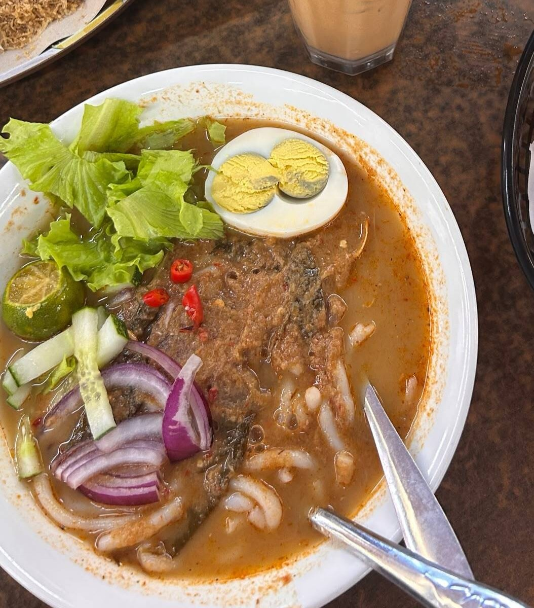
Did You Know? She enjoys spending her free time cooking and baking, especially when she wants to relax and express her creativity.
FYI, preparing homemade food is one of the little things she enjoys doing during her free time.
For her, cooking is not just about following a recipe♡, but also about trying new ideas and learning something different.
She believes that good food does not have to be expensive or complicated, as even a simple homemade meal can bring happiness.
A pinch of creativity,
A spoonful of patience,
A little passion,
And lots of love.
That's her recipe for happiness!
Experience
Practical Training at Jawat Johan Sdn. Bhd.
During her internship at Jawat Johan Sdn. Bhd., she gained valuable experience in filing, organising and maintaining company records. Although the company focuses on construction, she also learned to handle various administrative documents and understand the company's operations. One of her memorable experiences was joining her aunt, the Head of the Facility Department, during audit visits to health clinics in Keningau, Apin-Apin, Bingkor and Kundasang. She had the opportunity to observe clinic facility inspections and documentation checks carried out together with representatives from Jabatan Kesihatan Negeri Sabah (JKNS). This experience helped her understand workplace responsibilities beyond office tasks.
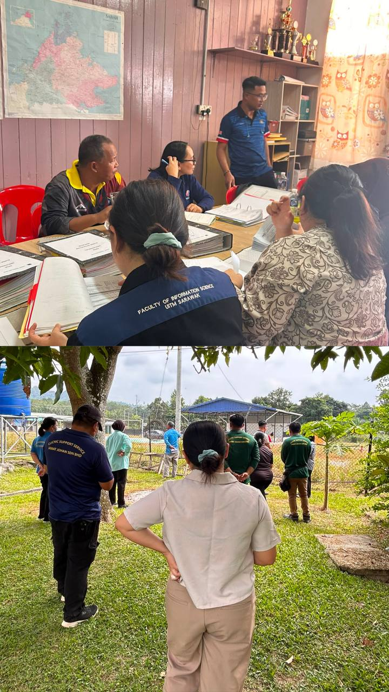
Field Visit with TONIBUNG – Micro-Hydro Project
She also had the opportunity to accompany her aunt, Vera Seminding, a mechanical engineer, to observe a micro-hydro project organised by TONIBUNG, a community-led organisation based in Penampang, Sabah. The visit involved exploring seven rural villages in the Ulu Papar area. Starting from Batu 32, Gunung Emas, along the Penampang-Tambunan road, she experienced an approximately 10-hour hike through the forest just to reach the first village, Kampung Longkogungan. During the visit, she learned how micro-hydro systems use flowing water to generate electricity for remote communities. This experience gave her a deeper appreciation of rural life, renewable energy and the challenges faced by communities in accessing electricity.
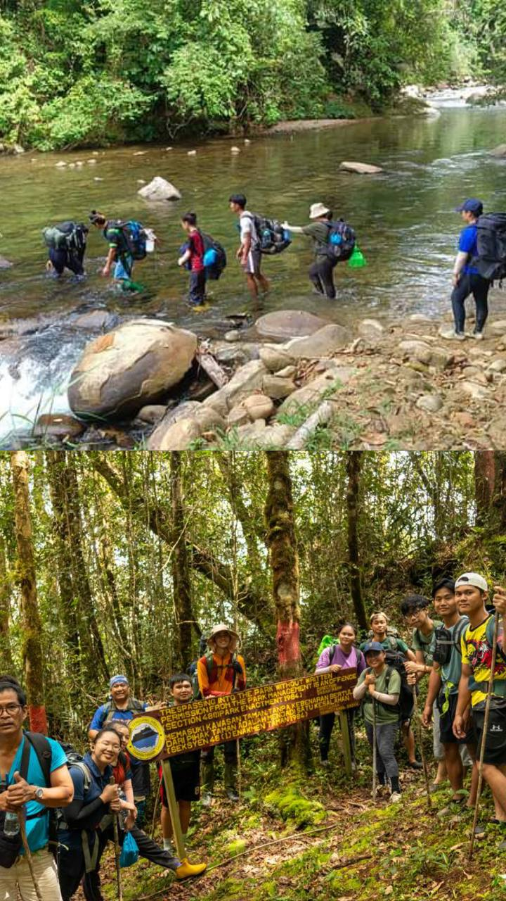
Skills she continues to develop
- Communication and teamwork
- Time management and organisation
- Creativity and problem-solving
- Willingness to learn
- Responsible attitude
- Enjoys helping and working with others
Education
Her education journey reflects her growth, learning and the experiences that have shaped her.
| Level | Institution | Focus |
|---|---|---|
| Secondary School | SMK Datuk Peter Mojuntin, Sabah (Sabah Sports School) | School education and co-curricular activities |
| Diploma | Universiti Teknologi MARA (UiTM), Sarawak | Diploma in Information Management |
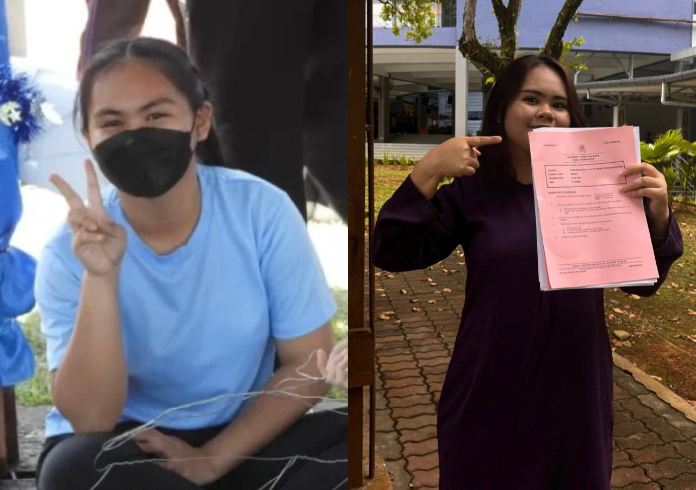
Family
Family is an important part of her life. The memories shared with loved ones are a reminder of where she comes from and the people who have supported her along the way.
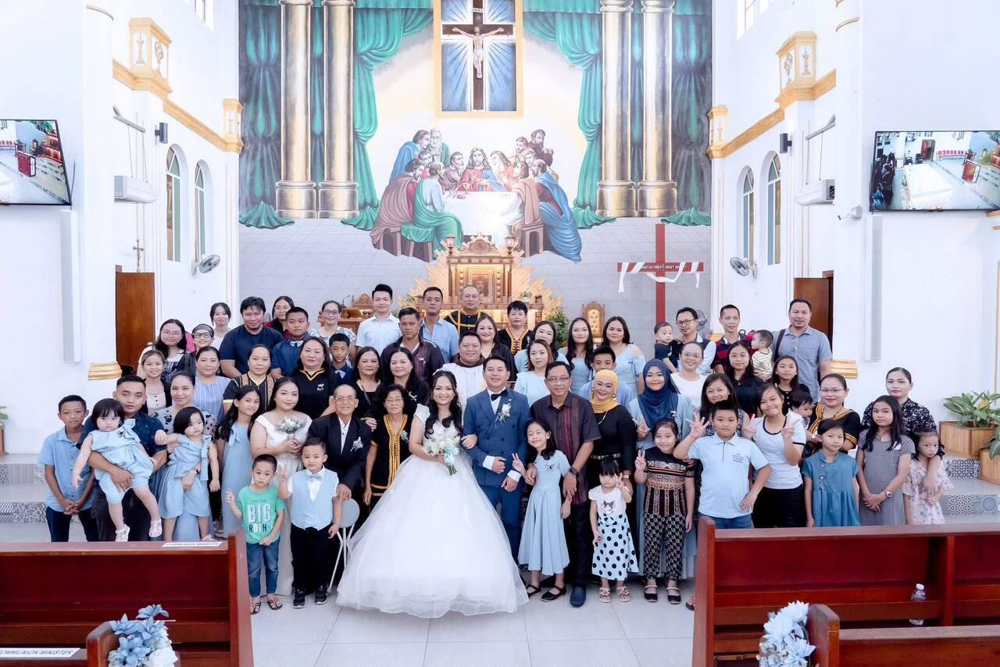
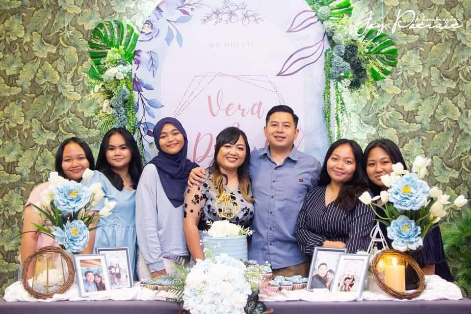
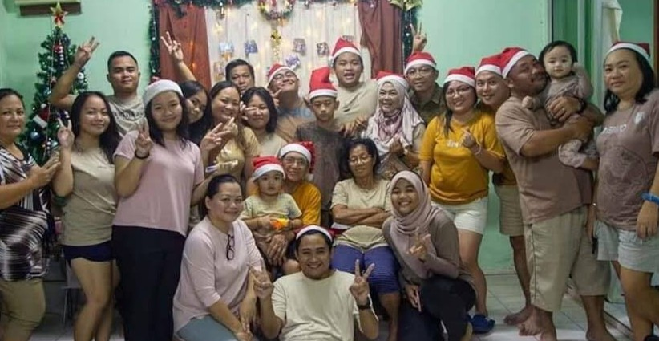
A Special Place in Her Heart: Her Grandpa
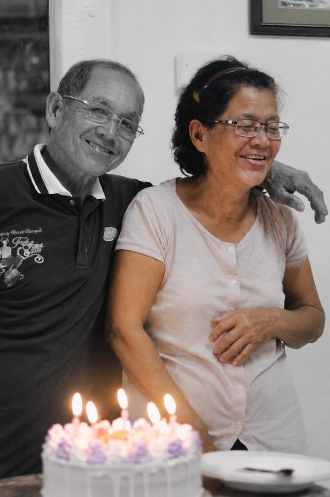
Her late grandfather, Kakee, holds a very special place in her heart. During her Semester 2 break, she returned to Sabah and was fortunate to spend some time with him. She had the opportunity to take care of him at home for a day, followed by almost three weeks of visiting and staying with him in the hospital.
Those weeks were unforgettable for her. She remembered how he slowly became weaker, from recognising her as his granddaughter to the heartbreaking moment when he could no longer remember who she was.
One of his wishes was to see her achieve the Dean's List. Sadly, he passed away before she had the chance to share that achievement with him. Not long after his passing, she received the news that she had made the Dean's List. It was a proud moment, but also a bittersweet one because she never got to tell him or see his reaction.
Until today, she carries his wish as a motivation to keep doing her best. She hopes that wherever he is, he knows that she finally achieved what he once wished to see.
Some wishes come true, but the people we wish to share them with are no longer here.
Family Song
When this section comes into view, the family song can start after the visitor has enabled audio. It will stop when the visitor scrolls away from this section.
Audio needs one tap first because most browsers block automatic sound until the visitor interacts with the page.
Family Video
Gallery
A few snapshots of moments, places and people worth remembering.
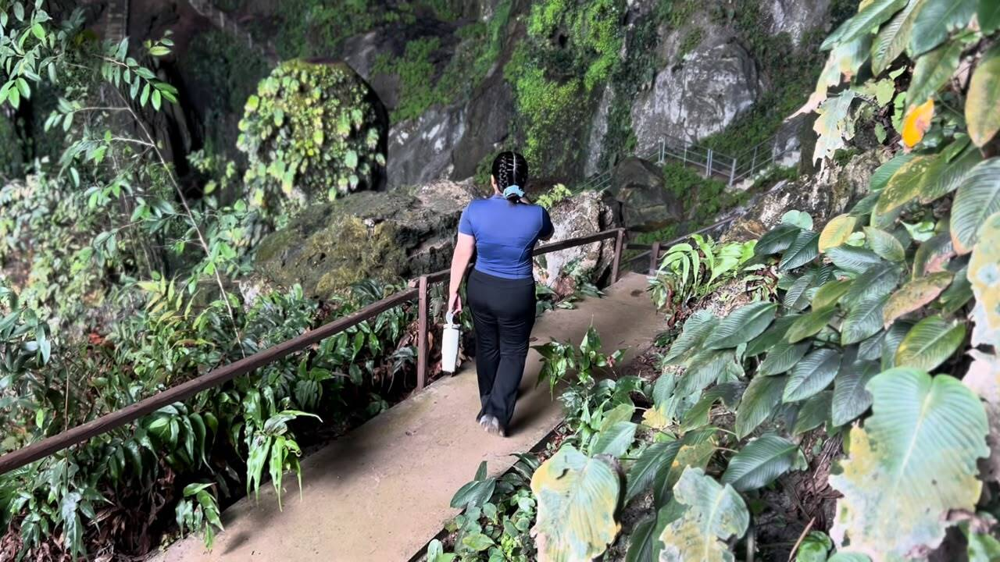
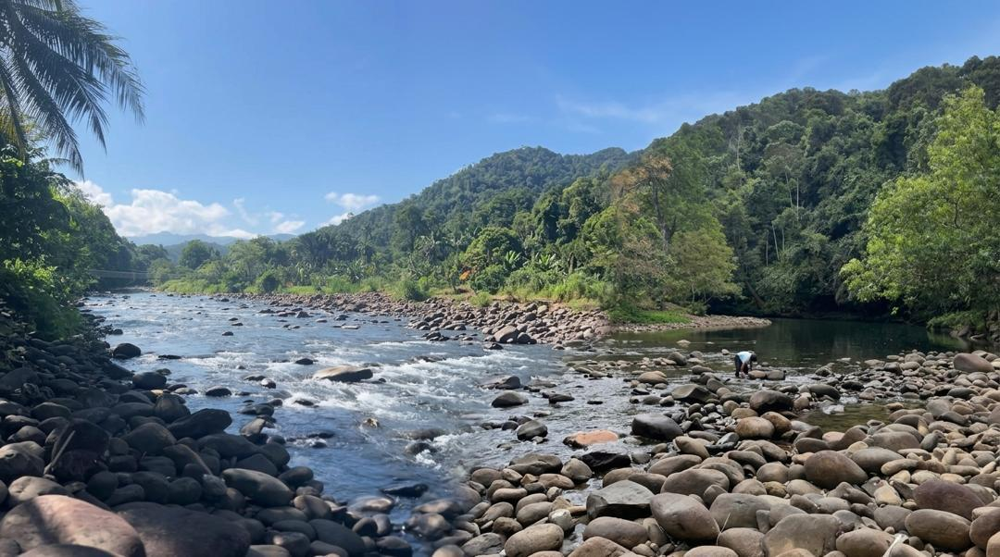
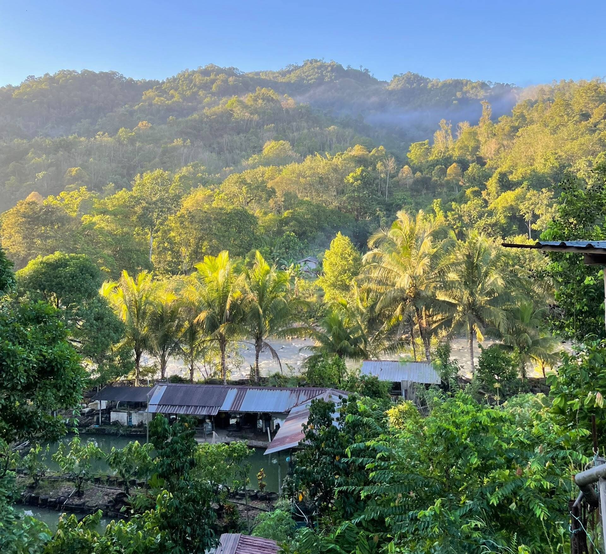
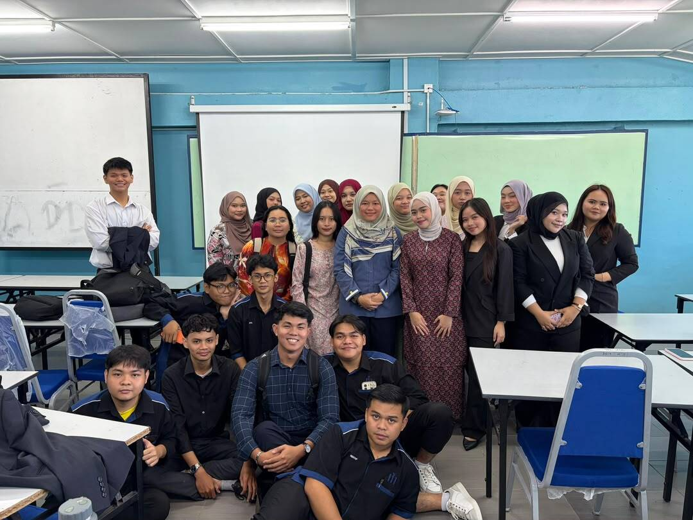
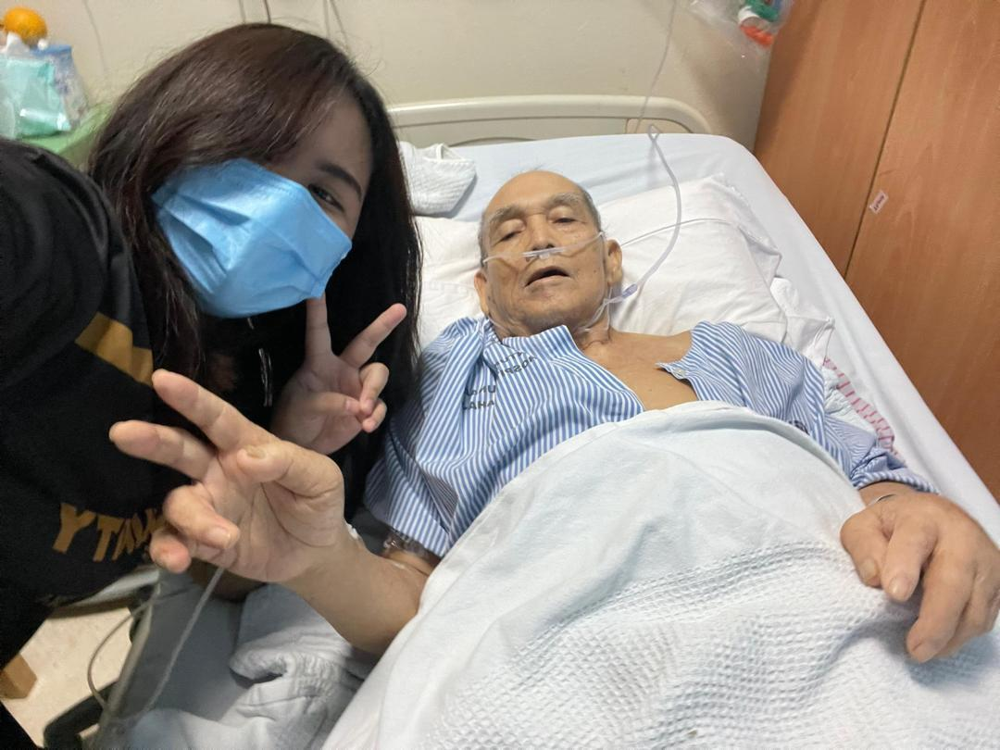
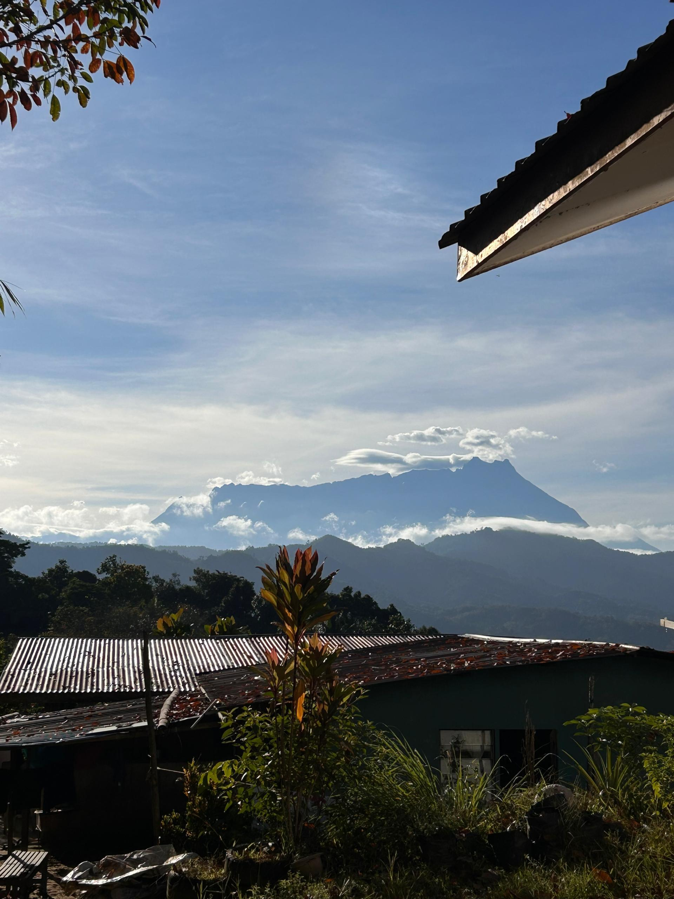
Social Media & Contact
Email: dbbyhrlna@gmail.com
Back to top: Return to the beginning of the page